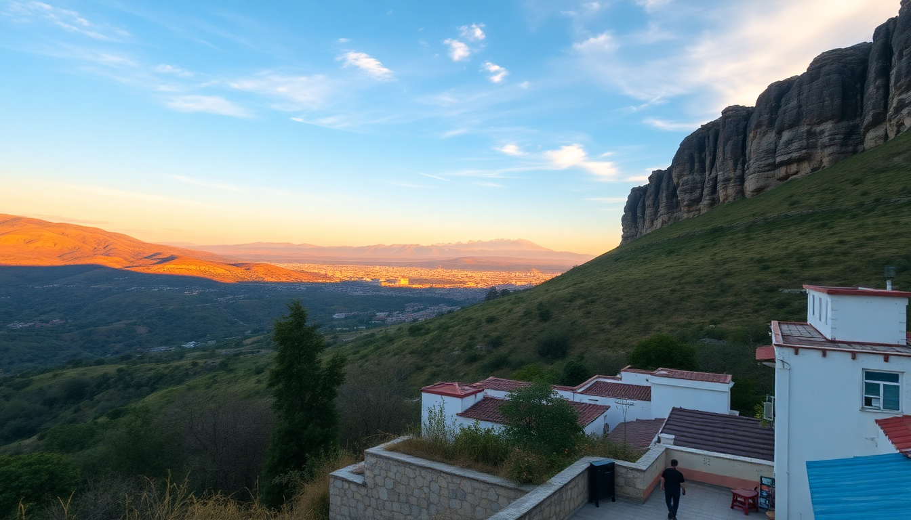

Where to Stay in Peru: Best Areas for Every Budget

I spent three weeks bouncing around Peru with a backpack and a loose itinerary, and the thing I wish I’d known before booking is how wildly different each city’s accommodation game is. Lima is sprawling and traffic-choked. Cusco is all cobblestones and altitude. Arequipa feels like a white-stone oasis. Iquitos is a humidity-soaked jungle base. Here’s where we actually stayed, what we paid, and where I’d put my money next time.
What Is the Best Neighborhood to Stay in Lima?
Lima is a city of districts, not streets. If you pick the wrong one, you’ll spend an hour in a taxi just to get dinner. We split our time between Miraflores and Barranco, and that felt about right.
- Miraflores is the safe, tourist-friendly hub. We stayed at Hotel B (a converted mansion with a killer rooftop) and could walk to the Malecón cliffside park in five minutes. It’s polished, a bit sterile, but convenient. Expect $70–120/night for a decent boutique.
- Barranco is grittier and cooler. Our room at Second Home Peru was a steal at $45/night, and we ate at Isolina, a taverna that does old-school Peruvian comfort food. The downside: sketchier streets after dark.
- San Isidro is where the business hotels live. Fine if you’re on an expense account, but dead at night.
- Avoid Callao entirely unless you have a specific reason. It’s the port district and not set up for tourists.
For first-timers, I’d base in Miraflores. For second-timers, Barranco. Use the Metropolitano bus to get between them—it’s faster than a taxi.
Where Should I Stay in Cusco to Avoid Altitude Sickness?
Cusco sits at 3,400 meters. The first two days, I had a headache that felt like someone was squeezing my brain in a vice. Where you stay matters.
- San Blas is the artsy neighborhood uphill from the Plaza de Armas. It’s charming—narrow streets, artisan workshops, and the Museo de Arte Precolombino is a 10-minute walk. But climbing those stairs with a backpack at altitude is brutal. We stayed at Tambo del Arriero ($60/night) and loved the vibe, but I regretted the location every time I had to haul myself back up.
- Plaza de Armas is the center. Hotels here are pricier but you save your energy. Hotel Rumi Punku ($80/night) sits on a quiet side street and has oxygen tanks in the rooms—a lifesaver for the first night.
- San Pedro is a local market area. Cheaper, louder, and closer to the San Pedro Market for $1 smoothies. Not recommended for solo women after dark.
My advice: book a hotel with coca tea on arrival and a room on a lower floor. And don’t book the first night in San Blas—your lungs will hate you.
What Part of Arequipa Has the Best Access to Attractions?
Arequipa is compact. You can walk from the Plaza de Armas to most things in 20 minutes. The trick is picking a hotel that doesn’t leave you on the wrong side of a one-way street.
- Yanahuara is a residential district with postcard views of Misti Volcano. We stayed at La Casa de Melgar ($50/night), a colonial house with a courtyard. It’s a 15-minute walk to the plaza, but the neighborhood feels quiet and safe.
- Historic Center is where the action is. Hotel Libertador is the splurge option ($120/night) with a direct view of the Santa Catalina Monastery. We didn’t stay there, but we had drinks on their terrace.
- Cayma is a cheaper, slightly rougher area. We looked at a hostel there and decided the 20-minute uphill walk wasn’t worth saving $10.
If you want to do the Colca Canyon tour, most operators pick up from central hotels. We booked through Peru Hop and they collected us from our door in Yanahuara.
Which Neighborhood in Iquitos Is Best for Jungle Tours?
Iquitos is a city you pass through, not a place you linger. The only reason to stay is to get into the Amazon. Pick the wrong area and you’ll be stuck in traffic for an hour trying to reach the port.
- Belén is the gritty riverside district. We stayed at Amazon Bunkhouse ($25/night) because it was the cheapest option near the docks. It was loud, hot, and the smell from the river was intense. Do not stay here unless you’re on a shoestring.
- San Juan is where most mid-range hotels sit. Hotel El Dorado ($60/night) has air conditioning that actually works and a pool. It’s a 10-minute mototaxi ride to the port.
- Punchana is the neighborhood closest to the Nanoe River access point. We switched to La Casa del Río ($45/night) for our second night and it was quieter, with a better restaurant attached.
Book your jungle tour through your hotel. We did a three-day trip with Amazon Explorer and they handled the boat pickup from Punchana. Saves you negotiating with mototaxi drivers.
Is It Better to Stay in a Hotel or Hostel in Peru?
Depends on your budget and your tolerance for noise. We mixed both.
- Hostels like Pariwana in Cusco ($12/night for a dorm) are social and central. But the party crowd keeps you up until 2 AM. I’m too old for that.
- Budget hotels in the $40–60 range are the sweet spot. We loved Hotel El Portal in Arequipa ($55/night) for its included breakfast and quiet courtyard.
- Luxury in Peru is cheap by US standards. Belmond Monasterio in Cusco is $400/night, but you get a converted 16th-century monastery with original frescoes. We didn’t stay there, but we peeked inside and it’s stunning.
One tip: book with Booking or Hotels.com for free cancellation. We changed three reservations after realizing we wanted to stay longer in one city and shorter in another.
What Is the Best Way to Get Between These Cities?
Peru’s domestic flights are the only sane option for long distances. We flew LATAM from Lima to Cusco ($80 one-way) and from Cusco to Arequipa ($60). The flights are short—under 90 minutes—but the altitude change hits you fast.
- Peru Hop is a hop-on-hop-off bus service that connects Lima, Cusco, and Arequipa. We used it for the route from Arequipa to Lima ($50). The buses are comfortable, with reclining seats and movies. But the ride from Cusco to Arequipa is 10 hours. Do it overnight.
- Cruz del Sur is the local bus line. Cheaper, but less comfortable. We took it from Arequipa to Iquitos (yes, you can bus partway, then boat). Never again.
- For Iquitos, you have to fly. LATAM and Sky Airline run routes from Lima. Book early—prices triple last-minute.
Get an eSIM before you go. I used Airalo and it worked in all four cities without needing a local SIM. Saved me hunting for a shop in the Iquitos heat.
FAQ
Is it safe to walk around Lima at night? Miraflores and Barranco are generally safe until 10 PM, but stick to main streets. We walked from Hotel B to La Lucha for late-night sandwiches and felt fine. Avoid the Malecón after dark—it’s poorly lit and empty. Use Uber or taxi seguro (official cabs) after 11 PM.
Do I need to book tours in advance for Cusco? For Machu Picchu, yes. Book your entrance ticket and train (we used Inca Rail) at least two months ahead. For day trips like Sacred Valley or Rainbow Mountain, you can book the night before in Cusco’s Plaza de Armas. We booked a Sacred Valley tour with Machupicchu Travel for $35 and it was fine.
What is the best time of year to visit Peru? May to September is dry season in the Andes and jungle. We went in June and had clear skies in Cusco and Arequipa, but Iquitos was still humid (it’s always humid). Avoid January to March if you’re doing the Inca Trail—trails close for maintenance and rain is relentless.
Conclusion
- Lima: Base in Miraflores for convenience, Barranco for character.
- Cusco: Skip San Blas on your first night; book Plaza de Armas for altitude sanity.
- Arequipa: Stay in Yanahuara for views, Historic Center for access.
- Iquitos: Don’t stay in Belén unless you have to; Punchana is your best bet for jungle tours.
- Transport: Fly between cities. Use Peru Hop for the Arequipa-Lima leg. Get an eSIM before you land.